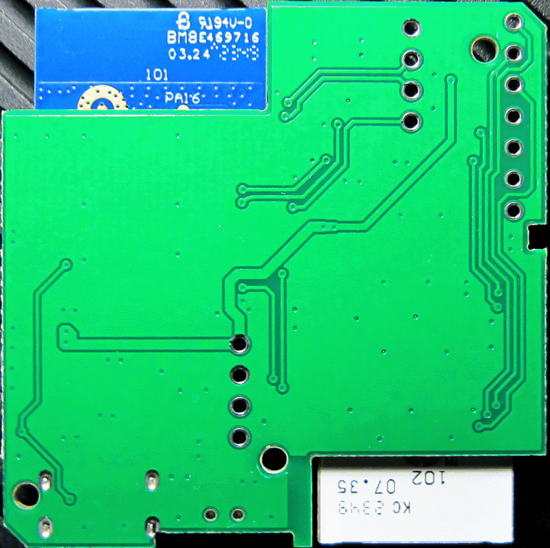
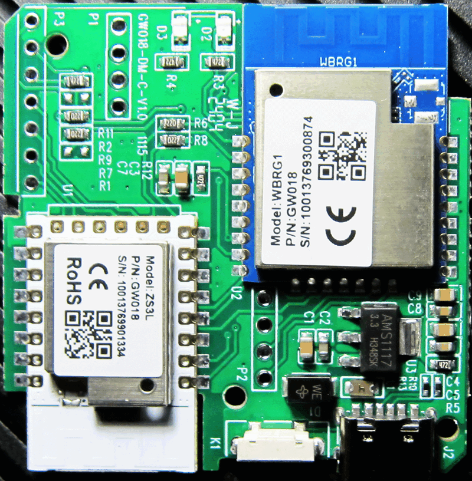

Tuya Smart Gateway WiFi-BLE-Zigbee, Model: RSH-GW018 DM
Tuya Modules:
WBRG1
,
ZS3L
Full Flash:
WBRG1
,
ZS3L
 
P1:
1
GND
2
LogTX
3
LogRX
4
EN
Для запуска в режим программирования:
1) EN/RST на GND
2) PA7 LogTX через 1k на GND
3) Отпустить EN/RST
4) Отпустить PA7 LogTX
Использовать wbrg1.zip:wbrg1\rtltool.py
P2:
1
Vcc
2
GND
3
RX1
4
TX1
P3:
1
GND
2
RST2
3
SWCLK
4
SWDIO
4
RST
4
TXD
4
RXD
Jlink: SWCLK, SWDIO, RST